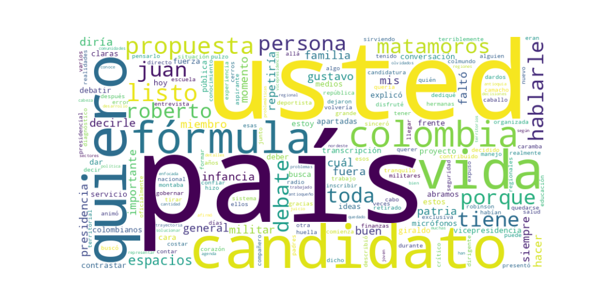

Seguidores: 1,880
Reporte de Análisis de Comunicación: Candidato Presidencial Gustavo Matamoros
1. Perfil de Comunicación: El candidato presenta un estilo de comunicación híbrido, combinando un tono formal y respetuoso, propio de su formación militar e institucional, con momentos de cercanía y sinceridad emocional. En entrevistas o formatos más personales (como segmentos de preguntas personales) adopta un lenguaje más coloquial y anecdótico, buscando generar empatía. En sus declaraciones políticas, su lenguaje es directo, estructurado y de carácter propositivo, evitando un tecnicismo excesivo para llegar a un público amplio. Se proyecta como una figura seria y con autoridad, pero accesible.
2. Temas Principales: * Servicio a la Patria y Liderazgo Experto: Aborda su carrera militar de 43 años como su principal credencial, enmarcando su candidatura como una extensión de ese "servicio" al país. Ejemplo: "Después de 43 años sirviendo a la patria... Comienza un nuevo servicio a Colombia." * Inclusión y Desarrollo Regional: Destaca la importancia de integrar a las regiones "olvidadas" o "apartadas" en la toma de decisiones. Ejemplo: Presenta a su fórmula vicepresidencial como un conocedor de "territorios olvidados" y problemáticas regionales. * Seguridad y Orden: Aunque no se desarrolla en profundidad en este corpus, es un tema implícito en su perfil castrense y se menciona explícitamente como parte de su diagnóstico crítico de la situación nacional. * Democracia y Diálogo Plural: Aboga por espacios de debate inclusivos donde todos los candidatos tengan voz, criticando la exclusión mediática. Ejemplo: "Abramos los micrófonos, ampliemos los espacios y permitamos que los colombianos escuchen todas las alternativas."
3. Tono y Sentimiento Dominante: El tono general es serio, respetuoso y propositivo, con un trasfondo de patriotismo institucional. En momentos personales, se vuelve nostálgico y emotivo (al hablar de su familia e infancia). En el ámbito político, es firme y directo, especialmente al reclamar espacios de participación, mostrando una actitud segura y lista para el desafío ("yo sí estoy listo"). Prevalece un sentimiento de deber y servicio, antes que uno de ataque o confrontación desmedida.
4. Palabras Clave de Poder: * Servicio / Servir a la patria (Enmarca su rol como una misión continua). * Listo (Utilizado repetidamente para transmitir preparación y disposición: "listo para debatir", "listo para dar la cara"). * Propuestas claras (Se presenta como una alternativa concreta y definida). * Territorios olvidados / Regiones apartadas (Construye una narrativa de inclusión geográfica). * Abramos los micrófonos (Eslogan que sintetiza su demanda de pluralidad mediática y diálogo). * Dar la cara (Sugiere responsabilidad, transparencia y valentía).
5. Conclusión Estratégica: La estrategia de comunicación del candidato Gustavo Matamoros busca construir una imagen de autoridad experimentada y serena, anclada en su extensa carrera militar, pero complementada con un discurso de inclusión y apertura democrática. Parece hablarle a un electorado que valora el orden, la institucionalidad y la experiencia de servicio, pero que también puede sentirse desconectado del centro político tradicional. Su narrativa conecta el orden castrense con el desarrollo regional, apelando tanto al sentimiento patriótico como a la necesidad de integrar a la periferia. Con su énfasis en "propuestas claras" y su demanda de espacios para "todas las voces", busca posicionarse como una alternativa seria, dialogante y fuera de los circuitos políticos habituales, evocando confianza a través de la preparación y un deber patriótico renovado.
Los videos más exitosos del candidato se articulan en torno a una fórmula de contraste estratégico, combinando una imagen de firmeza institucional y deber con momentos de vulnerabilidad humana calculada. No se basa en ataques directos, sino en posicionarse como la opción seria, preparada y dispuesta en un escenario donde los demás (oponentes o instituciones) fallan. El patrón une autoridad moral (deber, servicio) con accesibilidad emocional (historias personales, duelo nacional) para construir una figura a la vez respetable y cercana.
El discurso apunta a un electorado de centro, institucionalista y potencialmente desencantado. No habla con la jerga juvenil extrema ni solo a una base ideologizada. Su tono es para quienes valoran: * Orden y respeto (lenguaje formal, pero claro). * Patriotismo no agresivo, pero sentido. * Transparencia y seriedad en el proceso político. * Liderazgo con experiencia y trayectoria comprobable (militar). Es un mensaje que busca conectar con indecisos que anhelan estabilidad y figuras "fuertes" pero no autoritarias, y con su base natural que valora su historial castrense.
La clave fundamental de su poder discursivo es la dualidad autoridad-humanidad. Logra desplegar el capital simbólico de las Fuerzas Militares (disciplina, servicio, jerarquía, patriotismo) mientras realiza gestos calculados de desarme emocional (contar anécdotas personales, expresar dolor nacional). Esto lo diferencia del político tradicional: no es el tecnócrata con datos, ni el populista con promesas grandilocuentes. Es la figura del "servidor público supremo" que trasciende la política partidista para presentarse como un administrador serio y experimentado de la cosa pública, con la suficiente humanidad para conectar. Su potencia reside en que su crítica al establishment (medios, políticos que no debaten) no es desde la outsider, sino desde la insider que conoce las reglas y exige que se cumplan correctamente. Ofrece orden, pero con un rostro humano.

Caption: Yo sí estoy listo para dar la cara, contrastar ideas y hablarle al país con propuestas claras. Abramos los micrófonos. Colombia merece escuchar todas las voces.🇨🇴
Likes: 92 | Comentarios: 8 | Reproducciones: 1,256
Ver en InstagramCaption: Después de 43 años sirviendo a la patria desde las Fuerzas Militares, he decidido inscribir mi candidatura a la Presidencia de la República junto a @robinsongiraldom como mi fórmula a la vicepresidencia. Gracias al @partidoecologistacolombiano por confiar en este proyecto de país. Comienza un nuevo servicio a Colombia.🇨🇴
Likes: 154 | Comentarios: 17 | Reproducciones: 3,166
Ver en InstagramCaption: Hoy Colombia llora a sus soldados caídos en el accidente del Hércules en Putumayo. Honramos su servicio y abrazamos a sus familias. Que Dios reciba a nuestros héroes y le dé fuerza a la patria para levantarse.
Likes: 52 | Comentarios: 5 | Reproducciones: 1,910
Ver en Instagram